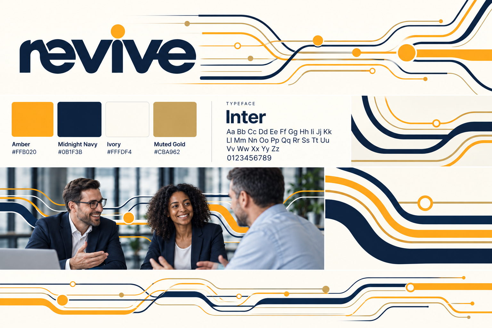
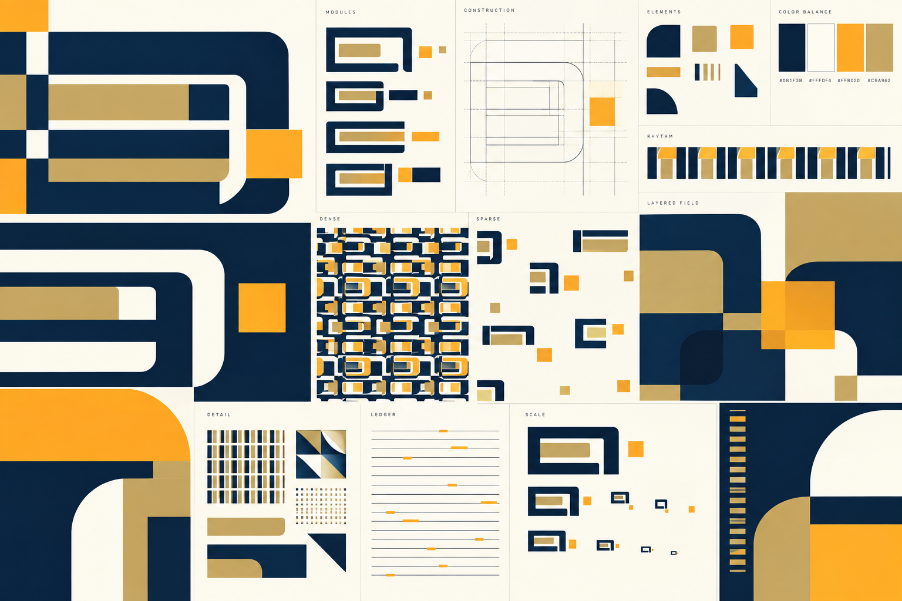
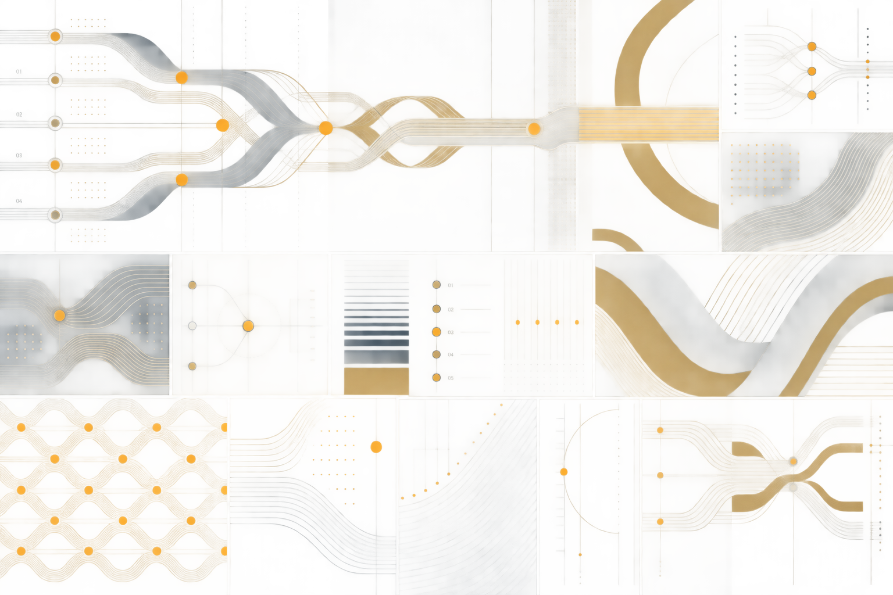
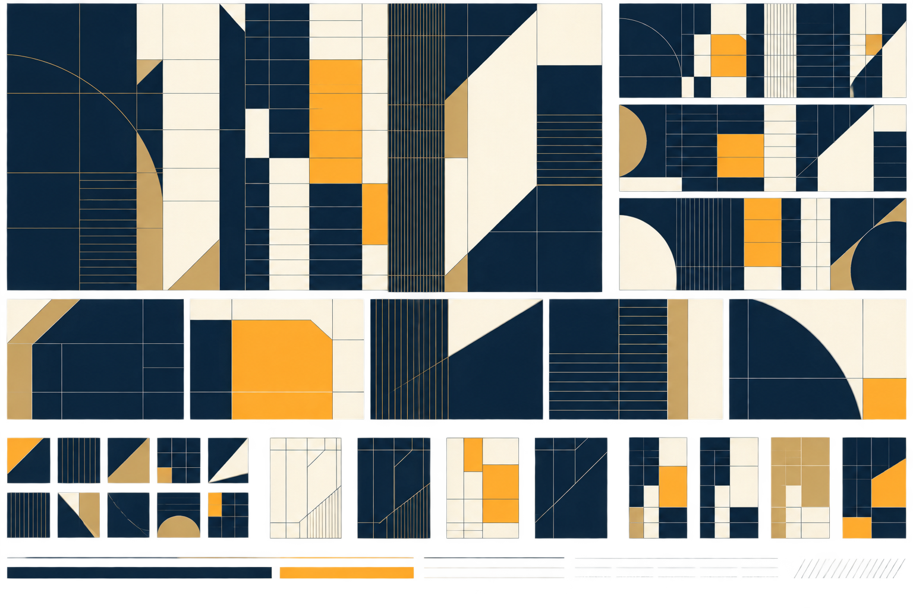

Het gekozen logo in beweging
De gekozen lowercase Revive-woordmark wordt gecombineerd met parallelle lijnen in verschillende gewichten. Lijnen splitsen, kruisen en komen weer samen; open cirkelmarkeringen en brede kleurbanen geven ritme en nadruk. De compositie blijft ruim en helder.

Reserve / Release
Een stevig kader bewaart waarde; een opening laat gefinancierde waarde vrijkomen. De basisvorm wordt uitgewerkt in geneste kaders, verhoudingen, ritmes, drukke en open patronen en sterke uitsnedes.

Funding Flow
Parallelle lijnen en brede banen verbeelden meerdere financiële stromen die door een helder traject lopen. De studie onderzoekt hoe lijnen verdichten, kruisen, samenkomen en weer ruimte maken, van fijne details tot grote kleurvlakken.

Decision Ledger
Een modulair raster geeft financieringsinformatie structuur. Verspringende kolommen, open cellen, fijne regels en enkele amberkleurige beslispunten brengen orde en nadruk in balans. Het patroon schaalt van microdetail naar uitgesproken compositie.
